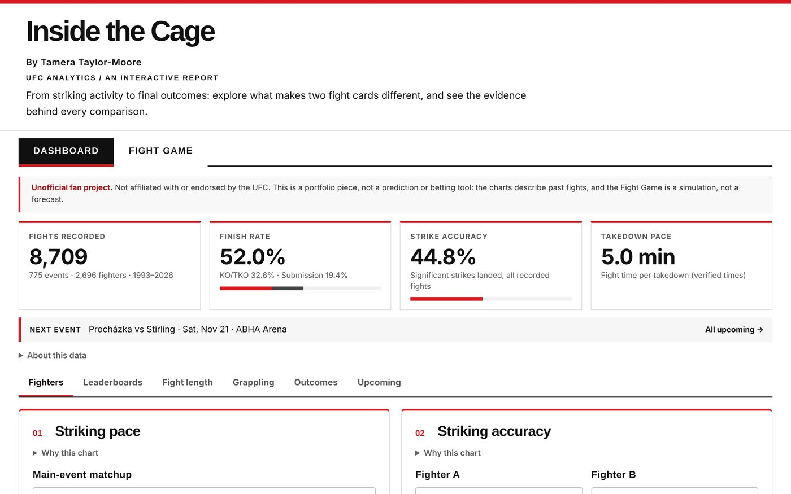
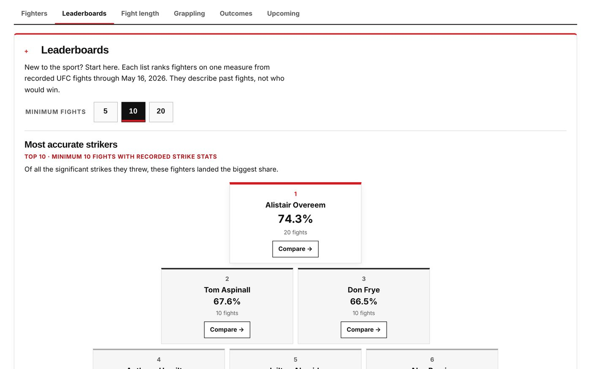
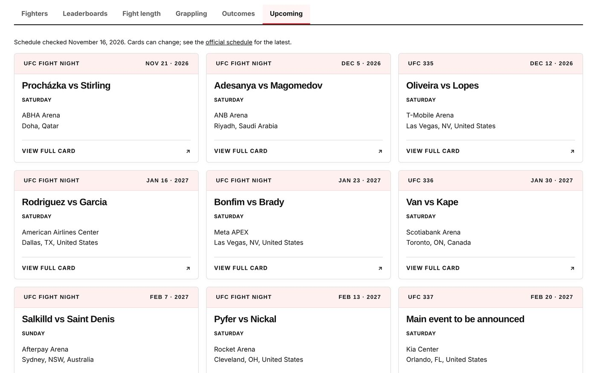
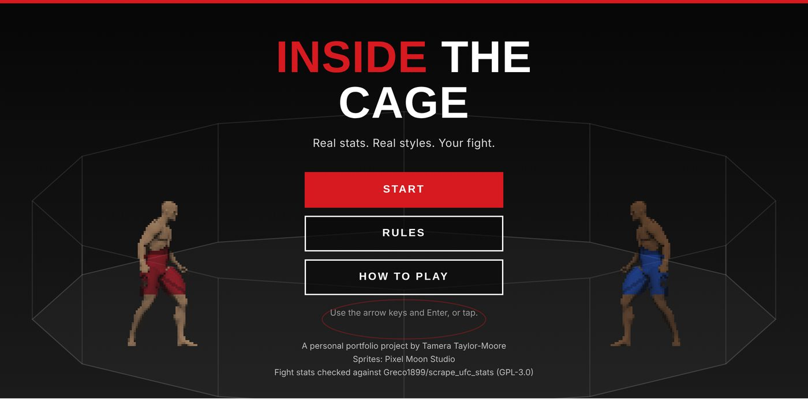
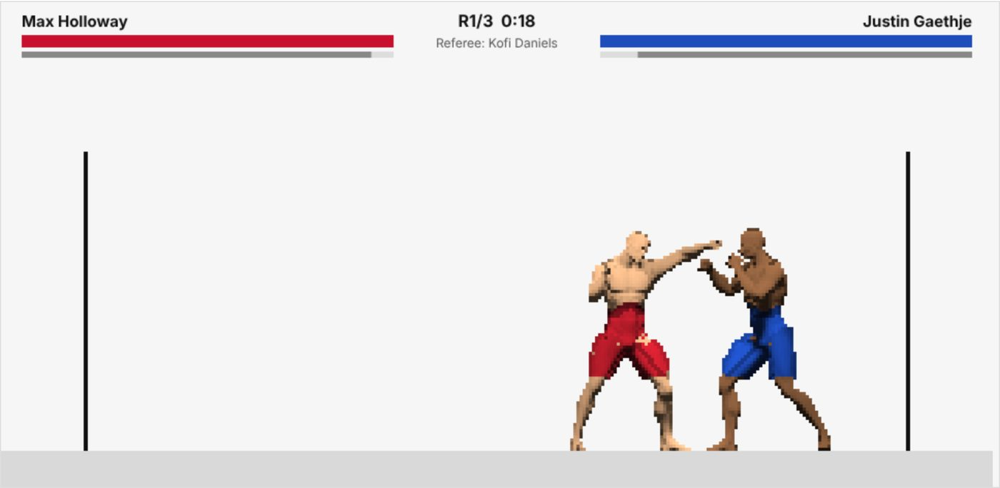

The problem
A dashboard can show that one fighter throws more strikes or shoots for more takedowns than another. I wanted to know whether those same numbers could drive a believable fight: a high-volume striker should throw more, a strong wrestler should shoot more, a hard-to-hit fighter should defend more.
The test I set for myself: a simulation built only from fight records should end fights, score rounds and pick winners at rates close to the real UFC. Otherwise it's a game that just happens to use real names.
The dashboard
The dashboard summarises 8,709 recorded UFC fights at a glance, then splits the detail into six sections: Fighters (striking pace, accuracy and a fighter finder), Leaderboards, Fight length, Grappling, Outcomes and Upcoming events. A second tab runs the fight game, where two fighters' recorded stats drive a computer-vs-computer bout scored by three judges.
- Built for newcomers: the Leaderboards tab ranks fighters on one measure at a time (most accurate, busiest, accurate and busy, most experienced) with a minimum-fights setting, so small samples don't top the lists.
- Searchable, not memorised: the fighter finder uses a browsable A–Z dropdown, so visitors don't need to know names in advance.
- Honest by design: missing statistics are excluded rather than treated as zero, every chart explains why it exists, and the page states it describes past fights, not who would win.





Data and constraints
- Scope: 8,709 recorded UFC fights, 775 events and 2,696 fighters, with fight data through May 2026. 2,535 fighters have enough data for the search tool and the game.
- Verification source: per-round statistics by fighter name from a second public dataset (Greco1899/scrape_ufc_stats, GPL-3.0). I downloaded only its CSV files and ran none of its code.
- Constraint: UFC's website terms don't allow automated copying of event listings or photos, so I built on the historical data and my own analysis instead.
- Public demo: an unofficial fan project, not affiliated with or endorsed by the UFC, and not a prediction or betting tool. Fighter art is a recoloured generic template pack (Pixel Moon Studio); referees are fictional and there are no likenesses of real fighters.
Approach
From fight records to ratings
Each fighter's record becomes a set of ratings (pace, accuracy, defence, takedown attempts and success, takedown defence, power, chin and submissions), where 1.0 is league average. Three rules keep the ratings honest:
- Fighters with only a few fights are pulled toward the average, so one lucky night can't make someone unbeatable.
- Pace is measured only while fighters are standing, so a wrestler who spends time on the ground isn't mistaken for a slow striker.
- Missing data is never treated as zero. A safeguard also trims single extreme fights so they can move a rating by at most 50%.
Judging rules written in plain English
I wrote the judging rules myself: impact first (damage, knockdowns, takedowns, ground work), then aggression, then control, with three judges who lean neutral, striking and grappling. Each rule became code and a test.
Calibrate, then backtest
The computer played itself thousands of times so I could compare finish rates and scoring with real UFC numbers. For the backtest, I rebuilt every rating using only fights before 1 January 2025, then simulated each decisive 2025–2026 fight between fighters the game already knew, 40 times each.
Findings
A third of the fight stats were on the wrong fighter
Islam Makhachev kept losing in the game, and his data said opponents had controlled him for 56 minutes. That didn't match fights I knew. A check on title fights (where the champion is always in the red corner) confirmed the cause: the source listed names winner-first but stat lines red-corner-first. Whenever the blue corner won, each fighter's stats were credited to the other one.
- 3,060of 8,709 fights (35%) had swapped stats
- 5,618fights already correct
- 0fights left unexplained after matching by name
- 96automated tests passing (84 JavaScript, 12 Python)
I fixed the cause in the data-cleaning script by matching every fight against the second dataset by fighter name, rather than editing anything by hand. New tests fail on the old data and pass on the fixed data.
Backtest against real 2025–2026 results
Calibration against real rates
| Measure | My game | Real UFC |
|---|---|---|
| Fights that end early | 59% | 52% |
| Knockouts / submissions | 38% / 21% | 33% / 19% |
| 10-8 rounds (share of judges' scores) | 5.9% | about 2–7% |
| Split decisions (share of decisions) | 13.3% | about 20–25% |
Finish rates matched the real 52% at the first milestone and now run high after the grappling and data fixes. Split decisions are too low, which I traced to longer, more one-sided ground control. Both are logged for re-tuning rather than hidden.
What it means and what's next
- Check results against reality. One fighter's number that didn't make sense pointed to a problem in a third of the data, and the fix moved the backtest from a coin flip to 58.9%.
- Next: a Power BI case study on the same data. I exported eight cleaned tables (fights, fighter-fight rows, ratings, league averages, calibration and backtest results). I'm designing the data model, SQL and DAX myself.
- Game scope: I narrowed the game to a finished, smaller piece: a playable arena on keyboard and phone, plus counter-striking and a split-decision re-tune. Larger milestones are paused, not deleted.
My contribution
What I did
- Designed the game and made every product and design decision
- Wrote the rating and judging rules in plain English
- Spotted the data anomaly, chose the title-fight check and the name-matching fix
- Set the testing standards (e.g., never loosen a test just to make it pass) and reviewed every result
- Specified the dashboard's arcade-style intro, the Leaderboards tab for newcomers and the browsable fighter search, then tested them myself
What the AI assistant did
- Claude Code, an AI coding assistant, wrote the code, tests and data scripts from my specifications
- It worked under rules I set: one task at a time, test after every change, no paid services, never publish without my permission
Limitations and reflection
- Strike volume in the game is about half of real output (for example 6.5 vs 12.2 strikes per minute for Justin Gaethje), and standing accuracy is about 30% vs a real league average of 44.8%.
- Patient counter-strikers win less than their records suggest, because the game doesn't model counter-punching yet. Submission specialists on their back have no sweeps yet.
- One known data issue is logged rather than hand-edited, so the data can always be rebuilt from its sources.
- What I'd do differently: set targets for strike volume, accuracy and grappler win rates from the start instead of calibrating mainly to finish rates, and check what an asset pack really contains before planning around it.
Supporting materials
I first built the dashboard as a ChatGPT custom GPT, then moved the code to Claude Code for its stronger UX capabilities. The data-cleaning scripts, raw data and tests stay private.